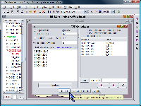
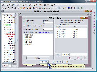

SamIam’s MAP tool provides an interface with which to define and calculate an answer to a Maximum a Posteriori query. Invoke the tool by selecting its menu item from the "Tools" menu or by clicking the "MAP" button on the tool bar.
The basic requirement for defining a MAP query is to select the subset of network variables over which you would like to calculate MAP. Do so using the Variable Selection Tool, found in the Tools menu.
|
|
 |
Since for complex networks the exact answer to MAP can be hard, SamIam’s MAP tool allows the user to choose between calculating an approximation or attempting to calculate the exact answer. The advanced user can control the behavior of the approximation algorithm. You can set the search method, the initialization method, and a value for the maximum number of search steps. By default, the MAP tool sets these to the best values for an average user’s query. For the details of the MAP approximation SamIam uses, refer to the paper "Approximating MAP using stochastic local search" by Park and Darwiche in the proceedings of UAI-01. If you choose to attempt an exact solution, you must specify a time limit on the length of the computation. As part of the results, SamIam will inform you whether or not it succeeded in calculating an exact answer within the time limit.
Once you have chosen the desired set of MAP variables, and if necessary, edited the algorithmic settings, click the "Update" button to run the MAP query. When the query finishes, the results will appear in the table that occupies the right-hand part of the MAP window. The table indicates an instantiation for each one of the selected MAP variables, and the joint and conditioned probabilities of the instantiation with the evidence.